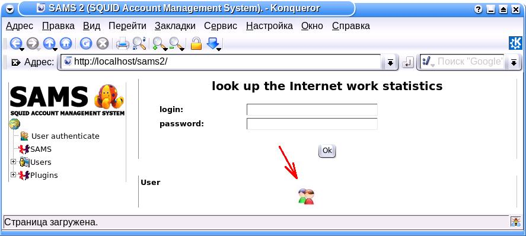

| SAMS2 Администрирование | ||
|---|---|---|
| Настройка | Оглавление | Особенности |
В любом web браузере откройте страницу http://yourservername/sams2. Появится окно, изображенное ниже. Выберите иконку, на которую указывает красная стрелка и используйте первоначальное имя и пароль администратора (admin и qwerty соответственно).

| Язык | Язык web интерфейса |
| Разрешить доступ пользователей к своей статистике | Устарело и более не используется. Эта функциональность перенесена в настройки самого пользователя. |
| Тема иконок | |
| Показывать дерево пользователей | |
| Показывать пользователей как | |
| Размер Килобайта, учитываемого вашим провайдером (byte) | |
| Размер Мегабайта, учитываемого вашим провайдером (byte) | Устарело и более не используется. |
| Показывать графики в отчетах | |
| Создавать PDF отчеты |
| Считать трафик | Тип трафика, для расчетов ограничений. Реальный (полученный из Internet) или полный () |
| Преобразовывать DNS имена | |
| Уровень детализации записей в журнале | |
| Домен по умолчанию | |
| Выберите скрипт, используемый для отправки сообщения при отключении пользователей | |
| Введите адрес администратора, на который следует посылать сообщения | |
| Способ аутентификации пользователя | |
| Проверять наличие команды на реконфигурирование squid каждые | |
| Обрабатывать логи SQUID | |
| Автоматически очищать счетчики трафика пользователей | |
| Путь к wbinfo | |
| Файл перенаправления запроса | |
| Путь к каталогу, где лежат файлы запрета запроса | |
| Редиректор | |
| Включить ограничение скорости доступа пользователей (delaypool) | |
| Сохранять данные о трафике в базе за последние N месяцев | |
| Автоматически создавать новых пользователей | |
| Шаблон у создаваемого пользователя | |
| Группа у создаваемого пользователя |
Содержит списки с расширениями файлов, доступ к которым будет запрещен. Расширения можно указывать в виде регулярного выражения. При проверке url на совпадение элементу списка, проверяется только та часть url, которая указывает на путь внутри хоста.
Содержит списки с регулярными выражениями. При проверке url на совпадение элементу списка, проверяется весь url. При совпадении с каким либо выражением, url будет подменен на значение, указанное в настройках прокси сервера, параметр "файл перенаправления запроса". Используется для вырезания рекламы.
Содержит списки адресов, которые будут заменены на значение, указанное в свойствах списка. При проверке url на совпадение элементу списка, проверяется только та часть url, которая указывает на адрес и порт. Элементы списка могут быть указаны в виде регулярного выражения. Используется для принудительного использования одного сайта вместо других.
Содержит списки адресов, доступ к которым будет запрещен. Элементы списка могут быть указаны в виде регулярного выражения. При проверке url на совпадение элементу списка, проверяется только та часть url, которая указывает на адрес и порт. Используется для запрета доступа к сайтам.
Содержит списки с регулярными выражениями. При проверке url на совпадение элементу списка, проверяется весь url. При совпадении с каким либо выражением, доступ будет запрещен.
Содержит списки адресов, доступ к которым будет разрешен. Элементы списка могут быть указаны в виде регулярного выражения. При проверке url на совпадение элементу списка, проверяется только та часть url, которая указывает на адрес и порт. Используется для разрешения доступа к сайтам, игнорируя ограничения по времени.
Содержит списки локальных доменов и подсетей. Регулярные выражения не поддерживаются. Доступ предоставляется всем, независимо от ограничений. Трафик не учитывается.
Содержит списки интервалов времени, во время действия которых доступ будет предоставлен.
Содержит списки шаблонов. Параметры шаблона перечислены ниже.
| Доступ запрещен ко всем URL | Если включено, то доступ ко всем ресурсам интернет запрещен, кроме тех, которые включены в разделе "Доступ к URL разрешен" |
| Списки SAMS | Подключение к шаблону списков, управляющими доступом к ресурсам интернет. |
| Объем трафика пользователя шаблона по умолчанию (Mb) | Ограничение трафика каждого пользователя. Значение 0 снимает ограничение. |
| Вторичный шаблон | Какой шаблон использовать для пользователя, если он превысил ограничение по трафику у этого шаблона. По окончании периода ограничения, пользователь автоматически переводится в основной шаблон. |
| Способ авторизации пользователей | Используемый способ авторизации для пользователей этого шаблона. Предварительно должен быть настроен в разделе Авторизация |
| Период лимита трафика | Период, по истечении которого сбрасываются счетчики пользователей. |
| Временные интервалы | Если не заданы, то ограничений по времени нет. Если указаны, то доступ предоставляется только в указанные интервалы. |
Оххх, тут еще писать и писать…
| Настройка | Оглавление | Особенности |